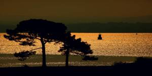
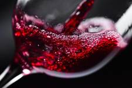

Vijesti
Idila na Plitvicama
Ima nešto čarobno u tišini zime, krajolicima u kojima vrijeme kao da je stalo. Pozivamo vas da ove zime doživite idilične prizore uspavane prirode Plitvičkih jezera, osjetite blagodati iscjeljujućeg boravka na svježem zraku i kušate bogatstvo naše gastronomske ponude inspirirane ličkom tradicijom. Više...

Nacionalni park Brijuni - radno vrijeme u prosincu
Individualni posjetitelji tijekom prosinca mogu posjetiti otok Veliki Brijun u vlastitom aranžmanu (bez vodiča i vožnje panoramskim vlakom). Posjet muzeju i izložbi te konzumacija pića i kupovina suvenira mogući su samo u dane realizacije organiziranog izleta za najavljene zatvorene grupe. Više...

Edukativno kušanje vina, destilata i likera
Agronomski fakultet Sveučilišta u Zagrebu i Javna ustanova „Nacionalni park Mljet“ po treći put organiziraju edukativno kušanje vina, destilata i likera. Kušanje će se održati u subotu 4. prosinca u prostorijama Doma kulture Zabrežje u Babinom Polju. Više...